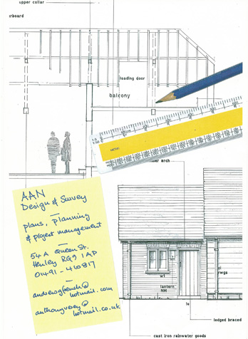

Architectural conversions, alterations and extensions in the Thames Valley area
Based in Henley on Thames, we operate anywhere in the Thames Valley and the South-East.From single storey extensions to complete new builds, we can guide you through the process with a tailor-made approach to each and every job.
Home Extensions - With the cost and difficulty of moving house higher than ever, now is the time to look at the possibility of creating more and better space in your present home.
A new garage, studio or granny annex – we can help you.
With over seventy years of experience in design and construction between us we can make a real difference and add value to your scheme and home.
We also have a broad experience in conversions, alterations and extensions of commercial properties. We have worked on offices, public houses and shops including interiors and traditional shop fronts.
